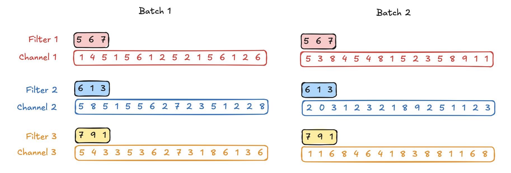
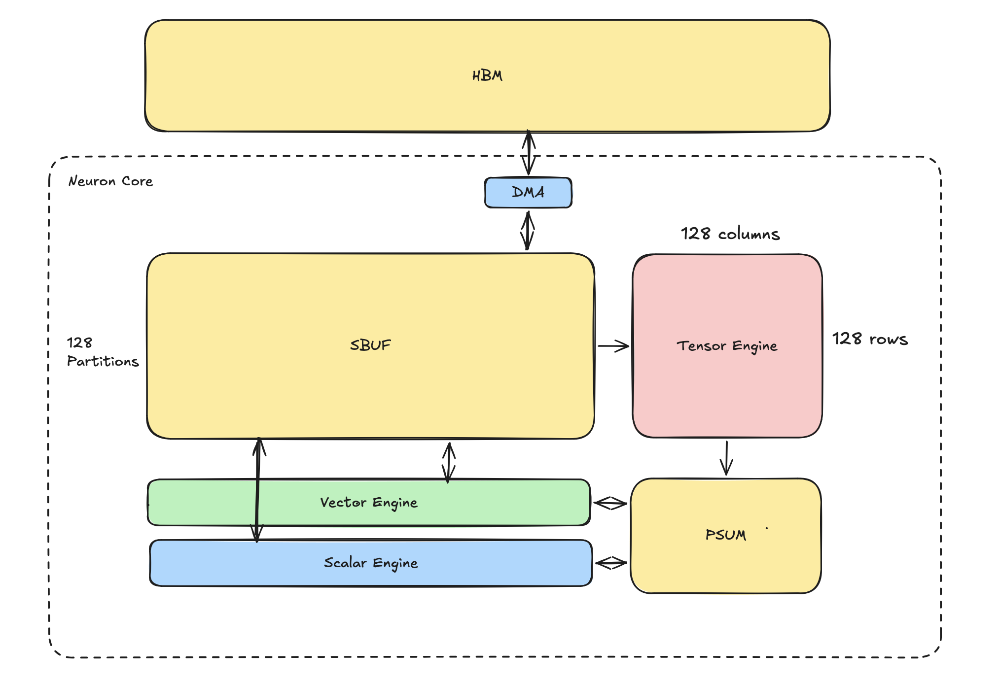
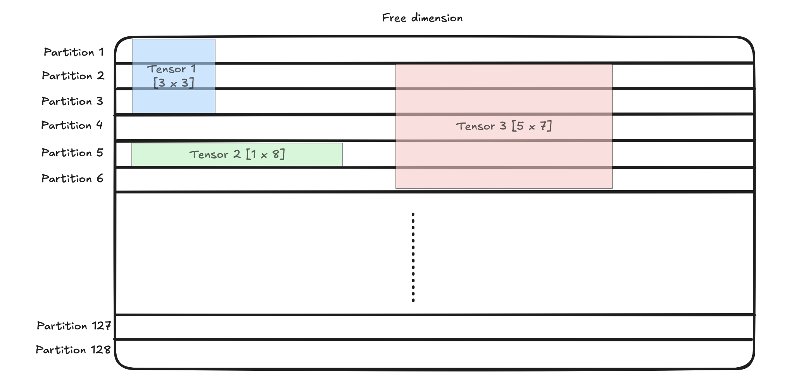
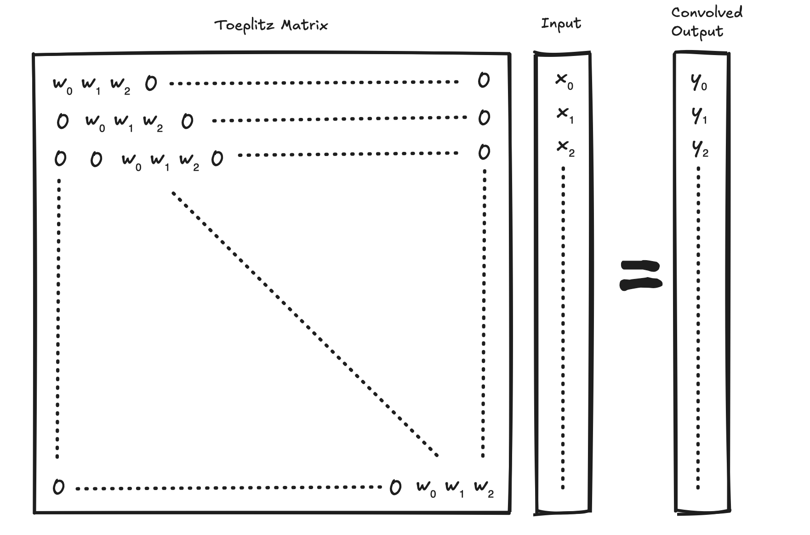
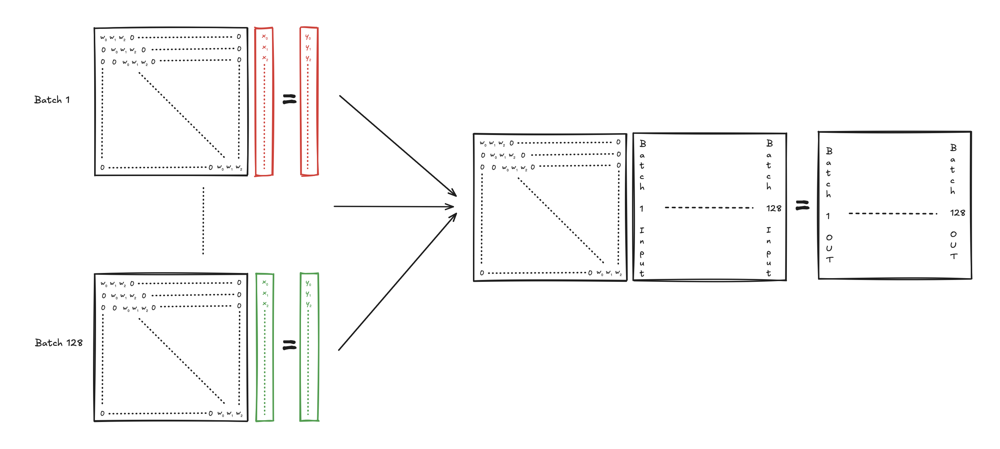
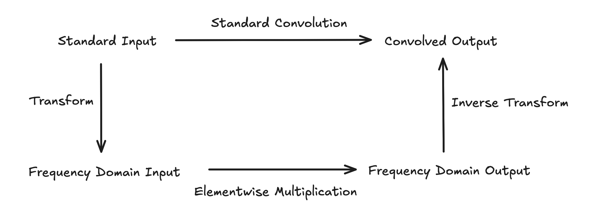
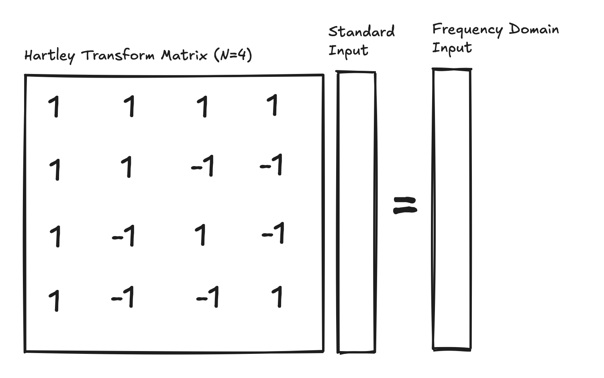
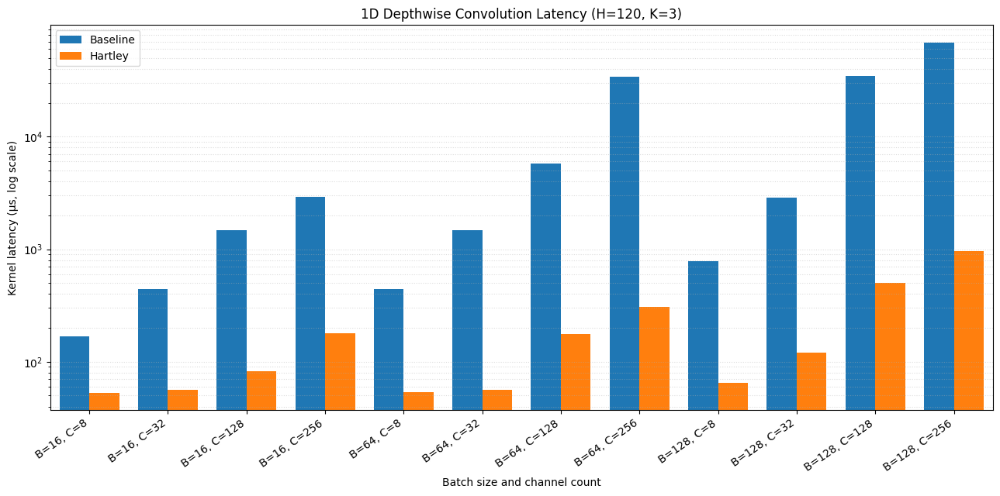

Efficient Small Channel Depthwise Convolutions
A Hartley-transform approach to 1D depthwise convolution—Lets build a 1D Depthwise Convolution Kernel 100x Faster Than Amazon's Public One!
What is a depthwise convolution, anyway?
If you've trained a vision model, you've met convolutions: a small window of weights slides across your input, and at each position you multiply, add everything up, and write down one number. In one dimension, that looks like this:
y[t] = w[0]·x[t] + w[1]·x[t+1] + ... + w[K-1]·x[t+K-1]x is your sequence, w is the filter (K weights), and y is the output. That's the whole idea. The filter is a little pattern detector, and the output tells you how strongly each position matches it.
In a depthwise convolution we have c parallel sequences that need to be convolved each with their own separate filter. Of course, with a batch dimension, meaning we have multiple copies of each channel (aka. c). To keep this simple, we will be looking at the one-dimensional case of convolution where w[i] is a scalar throughout this post.

That simple math makes depthwise convolutions cheap on paper, and that's exactly why they're everywhere in modern architectures. They show up as the short convolution in state-space models like Mamba, large SoTA LLMs like Qwen3.5, in ConvNeXt-style vision blocks, and in long-convolution sequence models. They give a model a cheap way to look at local context, and they usually sit inside every layer, repeated dozens of times.
But cheap on paper doesn’t necessarily mean cheap on hardware.
Depthwise convolutions do very little arithmetic per byte they move, and they don't look like the big dense matrix multiplies that modern accelerators are built around. Keep that thought, because it's the whole story of this post.
A quick tour of Trainium 1
AI models are larger and run on hardware accelerator, so we will need to pick one to test our idea. I like Trainium (if it’s good enough for OpenAI and Anthropic, it is good enough for me). We're going to focus on the first generation, Trainium 1. It's a great place to start: the core ideas (engines, memory, partitions) are all here in their simplest form. If you understand how this chip works, the additions in later generations are natural extensions, and you'll be able to follow them without much trouble.
A Trainium chip is built from NeuronCores, and each core has a few specialized compute engines that run side by side:
- The tensor engine is the heavyweight. It's a big systolic array, built to do 128x128 matrix multiplication very fast. This is where nearly all of the chip's peak throughput lives at 90 TFLOPS.
- The vector engine does elementwise math and reductions: add this to that, multiply these two, sum across a row. It's flexible, but with much lower throughput than the tensor engine at 2.3 TFLOPs.
- The scalar engine handles things like activation functions, and there's also a general-purpose engine for oddball operations.
Data moves through a software-managed memory hierarchy. Big tensors live in off-chip HBM. To compute on anything, you first copy it into SBUF, a fast on-chip scratchpad. Unlike a CPU cache, nobody moves data in and out for you: your kernel decides what gets loaded and when. Matrix multiplication results land in a smaller buffer called PSUM, and from there they're copied back to SBUF.

The detail that shapes everything is that SBUF is organized into 128 partitions, like 128 parallel lanes where the length of the lanes is the free dimension. The tensor engine multiplies by contracting along the partition axis, and the vector engine works on all 128 partitions at once. So how you lay your data out across those partitions largely decides how well the hardware is used. A shape that fills the partitions flies, and a shape that doesn't leaves most of the chip idle.

Why every percent matters
Let's zoom out for a second. The models we run on chips like these are enormous, and the chips themselves are expensive and hungry for power. A training run or a busy inference service keeps thousands of them running around the clock, and the electricity is a serious part of the cost.
At that scale, small inefficiencies stop being small. A kernel that wastes ten percent of the chip's time isn't a minor annoyance, it's ten percent of a very large bill, repeated in every layer of every step. Which brings us to the joke we're borrowing from Alexsa Gordić: at this scale, performance isn't measured in O(N), it's measured in O(NR), where NR stands for nuclear reactors. [https://www.aleksagordic.com/blog/matmul]
So, performance engineers care about squeezing the hardware (and hopefully building the fewest nuclear reactors needed). The big matrix multiplications in a model maps nicely onto the tensor engine, and they get most of the attention. But the operations that don't look like big matrix multiplies can quietly eat more time than their share of the math would suggest, because they end up on slower engines or sit waiting on data. Depthwise convolution is a classic example: it's cheap in arithmetic, but it's a poor fit for the engine that holds nearly all the chip's speed.
That's what makes it an interesting target for a custom kernel, and to develop it on Trainium that means NKI, the Neuron Kernel Interface, which lets you program these engines directly in Python. So here's the question the rest of this post tries to answer: depthwise convolution is a bad fit for the tensor engine, and the tensor engine is where the speed is. Is there a way to rewrite the problem so that it fits?
How people usually do it
Before coming up with anything, let's look at the standard ways to run a depthwise convolution on this hardware, and how fast each could go at best.
A bit of vocabulary first. The K weights of a filter are usually called its taps, a term borrowed from signal processing, where a filter was literally a delay line with a tap at each position. A "kernel with K taps" just means a filter with K weights.
Approach 1: turn it into a matrix multiply
The tensor engine is where the speed is, so the natural first move is to make the convolution look like a matrix multiplication. It can. For a single channel, the output is a matrix times the input sequence, and the matrix is a Toeplitz matrix: each row holds the filter, shifted over by one more position than the row above it, with zeros everywhere else.

Our input is laid out as [B, C, H]: batch, channels, sequence. Pick one channel. Every batch element in that channel is convolved with the same filter, so they all share one Toeplitz matrix. Therefore, put the sequence on the contraction axis and stack the batch elements side by side as columns, and one channel becomes a single matrix-matrix multiply, [H, H] @ [H, B]. Every channel has its own filter, so this happens once per channel.

Because the matrix is banded, each output only depends on the few inputs right around it. That means a long sequence doesn't have to be treated as one long column. We can cut it into chunks of 128 and treat each chunk as if it were one more batch element. The sequence gets folded into the batch dimension, so the operand has B · (H/128) columns instead of B, and the same matrix streams over all of them. That's useful because the tensor engine handles extra columns cheaply once a matrix is loaded.
How fast could it go?
Let's put a roofline model on this. The idea is that a kernel is held back by one of two limits, how fast the engine can compute or how fast we can move the data, and the slower one sets the speed:
time ≥ max( compute cost, memory cost )The compute cost comes from counting 128×128×128 tile matmuls, since that's the unit the tensor engine works in:
compute = 2 · ⌈H/128⌉ · ⌈H/128⌉ · ⌈B·(H/128)/128⌉ · C / (matmuls per second)The first two ceilings count how many 128×128 tiles the Toeplitz matrix is cut into, the third counts how many 128-column chunks of the folded input stream through it, and the factor of C is there because every channel needs its own matrix. This assumes the copies from PSUM back to SBUF never become a bottleneck, which is generous, so treat it as a best case. Notice how much of that work is wasted: each row of the matrix has only K useful entries, so almost all of the multiplications are by zero.
The memory cost is the time to get data on and off the chip. Assuming a dataype of fp16 which is 2 bytes and N be the length of the output, given by N = H + K - 1:
memory = 2 · B · C · H / DMA bandwidth (input in)
+ 2 · C · K / DMA bandwidth (the filters in)
+ 2 · B · C · N / DMA bandwidth (result out)The NKI library's version. The kernel we compare against later is a cousin of this idea, called implicit GEMM. It avoids building the big mostly-zero matrix by loading the input in a shifted layout, so the filter taps line up along the matmul's contraction axis. It's a smarter way to use the tensor engine, but it's still a depthwise convolution at heart, with a very thin matmul. [Verify this description against depthwise_conv1d.py before publishing.]
Approach 2: let the vector engine do it
The other direct approach follows the formula literally and skips the tensor engine entirely. Put the (batch, channel) pairs across the 128 partitions and run the sequence along the free dimension. Each partition owns one sequence and its K taps. Loop over the taps: take the input shifted by k positions, multiply by that tap's weight, and add it into a running total.
y = w[0] * x[0 : H]
y += w[1] * x[1 : H+1]
y += w[2] * x[2 : H+2]
...
There's no wasted arithmetic here. Each (batch, channel) pair has H outputs and each needs K multiply-adds, and the vector engine handles 128 elements at a time, so the roofline looks like this:
compute = B · C · K · H / 128 / (vector-engine operations per second)memory = 2 · B · C · H / DMA bandwidth (input in)
+ 2 · C · K / DMA bandwidth (the filters in)
+ 2 · B · C · N / DMA bandwidth (result out)The memory cost is identical to the Toeplitz approach, since the same data has to come in and go out. The difference is the compute side. The vector engine is a lot slower than the tensor engine, and the cost grows in direct proportion to K, so a longer filter means proportionally more work. All the while, the tensor engine, where nearly all of the chip's peak throughput lives, sits idle.
The common thread
Each approach either avoids the fast engine or uses only a sliver of it. The Toeplitz approach runs on the tensor engine but spends most of its arithmetic on zeros, and needs a different matrix for every channel. The vector approach does exactly the arithmetic required but on the slowest engine. A depthwise convolution is just a thin problem: a short filter sliding along a sequence, with very little work for each output.
That leaves an unusual idea. What if we accepted extra arithmetic, but made it run on dense, full-size matrix multiplies that the tensor engine handles at full speed, with matrices shared across every channel? That's where a little math from signal processing comes in.
A detour through signal processing
Everything so far has been about doing a convolution directly: slide the filter along the sequence, multiply, add. Signal processing has known for a long time that there's another way to get the same answer, and it's the key to this whole post.
Convolution becomes multiplication
Here's the idea in one sentence: convolving two sequences is the same as transforming both into the "frequency domain", multiplying them pointwise, and transforming back.
The standard version of this uses the Fourier transform. Take the input x and the filter w, transform both, multiply the two results element by element, and run the inverse transform on the product. In place of a sliding window, you get one transform on each side and a single multiply per element in between. (One technical detail: the theorem is really about circular convolution, so we zero-pad both sequences to length N = H + K − 1, the length of the full output, so nothing wraps around.)

The trouble with Fourier
So lets run a Fourier transform to get it in the frequency domain then… right?
The first problem is that the Fourier transform is complex-valued. Its basis functions are complex exponentials, so every number in the frequency domain has a real part and an imaginary part, and the pointwise multiply is a complex multiply (four real multiplies and two adds). You can handle that by splitting everything into real and imaginary parts, but it roughly doubles the data and complicates the pipeline.
The second is how the transform is usually computed. The fast Fourier transform (FFT) is a clever algorithm made of small butterfly stages with a lot of shuffling in between. That's great on a CPU, but it's a poor match for an engine built around big dense matrix multiplies and a rigid partition layout.
A transform of length N is also just a matrix multiply: an N×N matrix of fixed numbers times your sequence. It's more arithmetic than the FFT, N² instead of N·log N, but it's exactly the kind of arithmetic the tensor engine is built for. We just need a transform that doesn't drag complex numbers along.
Enter the Hartley transform
The Hartley transform is a close cousin of the Fourier transform that stays entirely in the real numbers. Instead of complex exponentials, it uses a real wave, cosine plus sine:
H[k] = Σₙ x[n] · cas(2π·n·k / N) where cas(θ) = cos(θ) + sin(θ)It's real in, real out, so there are no imaginary parts and no complex arithmetic, and everything stays in fp16. And it's its own inverse, up to a scale: apply the transform twice and you get your original sequence back multiplied by N, so the inverse uses the same machinery with a 1/N factor.
Since the discrete Hartley transform (DHT) is a matrix multiply, let's look at the matrix. Entry (n, k) is just cas(2π·n·k / N). Here's the smallest interesting case, N = 4, where every entry works out to ±1:

For larger N the entries are no longer all ±1, but they always stay between −√2 and √2. Three properties of this matrix matter for us:
- It's symmetric. Entry (n, k) equals entry (k, n), since both depend on the product n·k. So the matrix equals its own transpose, and we only ever need to store one copy.
- It's dense, with no zeros. Compare that to the Toeplitz matrix, which was mostly zeros. Every multiply in a DHT matmul is doing real work.
- It's the same for everything. The matrix depends only on N. It doesn't know about channels, batch elements or filters. Whatever sequence you give it, you multiply by the same N×N matrix.
Remember how the tensor engine works. It holds one operand in place (the "stationary" side), streams the other through (the "moving" side), and contracts along the 128-partition axis. That's the shape of the DHT:
- The matrix is stationary. We load the N×N DHT matrix once, with N on the partitions, and it never has to be reloaded. Contrast this with the Toeplitz approach, where every channel needed its own matrix.
- The data is the moving side. Every (batch, channel) sequence is a column, and we stream hundreds of columns through per matmul. As the number of columns grows, the cost of loading the matrix is spread thin.
- Symmetry removes a transpose. The tensor engine multiplies the transpose of the stationary operand by the moving one. For a symmetric matrix, the transpose is the matrix itself, so we get exactly the product we want without any extra data movement.
- There's nothing to waste. No zeros, no padding of the contraction axis beyond the sequence itself, and when N fills the 128 partitions, the whole systolic array is busy. (For larger N, you'd tile the matrix and accumulate partial products in PSUM, which the engine handles natively.)
- The inverse comes for free. The inverse transform uses the same matrix, so it's one more matmul against data that's already sitting in SBUF.
The price is extra arithmetic. A dense N×N matmul does far more math than a K-tap filter strictly needs. But the matmul is exactly what the tensor engine is built to do at full speed, so the bet is that doing more work, much faster, wins.
There's one twist. In the Fourier world, the convolution theorem is a clean pointwise product. In the Hartley world it's a little messier, because a single Hartley coefficient mixes information from a frequency and its mirror image. Writing X[−k] for the coefficient at the mirrored index (which wraps around to N − k), the transform Z of the convolution reads:
Z[k] = ½ · ( X[k]·Y[k] + X[−k]·Y[k] + X[k]·Y[−k] − X[−k]·Y[−k] )where X is the transform of the input and Y is the transform of the filter. It looks like a mouthful, but all it needs is the transformed input and a mirrored copy of it, combined with pointwise multiplies and adds. There's still no sliding window.
A little algebra makes it friendlier. Split the filter's transform into its even and odd parts, Y_even = (Y[k] + Y[−k]) / 2 and Y_odd = (Y[k] − Y[−k]) / 2. Then the whole thing collapses to:
Z[k] = X[k] · Y_even[k] + X[−k] · Y_odd[k]Two pointwise multiplies and an add. And since the filter is fixed, Y_even and Y_odd can be worked out ahead of time.
Put the pieces together and a depthwise convolution becomes three steps:
1. Forward transform. Multiply the padded input by the DHT matrix, and by a mirrored version of it to get X[−k]. These are dense matrix multiplies on the tensor engine.
2. Pointwise combine. Multiply by each channel's filter spectra and add. This is elementwise work on the vector engine.
3. Inverse transform. One more dense matrix multiply with the same DHT matrix, back on the tensor engine.
The per-channel part, the filter, only shows up in the cheap pointwise step. That's the shape of problem the tensor engine wants: one fixed matrix, a very wide stream of data, and no wasted zeros in the multiply. In the next section, we'll see how this maps onto an NKI kernel.
The kernel
Time to turn the math into an NKI kernel. The plan is three steps that match the three steps from the last section: transform the input, combine it with the filter, transform back. First, though, the data layout, because on this chip that choice shapes everything else.
Layout: one column per (batch, channel)
Every (batch, channel) pair is an independent sequence, so we flatten [B, C, H] into a pile of B·C columns, each one a sequence of length H. The sequence runs down the partition axis and the columns run along the free axis. That puts the sequence on the contraction axis of the matmul, which is where the DHT needs it.
Each column is zero-padded from H up to N rows, so we keep a tile that is N partitions tall and 512 columns wide, zero in the bottom rows, and load each slice of the input into its top H rows. (Here N is at most 128, so one tile covers the whole sequence. We keep it that way for clarity, and tiling the sequence for longer inputs is a natural extension.)
Three things get loaded once at the start and never move again: the DHT matrix, a second matrix that produces the mirrored spectrum (more on that in a moment), and the per-channel filter spectra from the previous section, which we've already combined into the two even and odd pieces. Everything else streams through.
Step 1: the forward transform
This is the dense, tensor-engine part. The DHT matrix is the stationary operand, the padded input tile is the moving operand, and one matmul produces the transformed spectrum for 512 columns at once:
nisa.nc_matmul(dst=ps_h, stationary=htm_sbuf, moving=pad_tile) # X[k]
nisa.nc_matmul(dst=ps_hr, stationary=htm_r_sbuf, moving=pad_tile) # X[-k]The second line is how we get the mirrored spectrum. Mirroring is just reordering the output rows, but reordering across partitions is awkward on this hardware. It's much easier to build the reordering into a second matrix, the same DHT matrix with its columns rearranged, and let the tensor engine produce the mirrored spectrum directly. That costs an extra matmul, but a matmul is exactly the cheap thing here. Both results land in PSUM and get copied to SBUF.
Step 2: the pointwise combine
Now the vector engine. With the spectrum X and its mirror in hand, the convolution is the two-multiply formula from the last section:
nisa.tensor_tensor(t0, s_h, w_a, op=nl.multiply) # X[k] · Y_even
nisa.tensor_tensor(t1, s_hr, w_d, op=nl.multiply) # X[-k] · Y_odd
nisa.tensor_tensor(conv, t0, t1, op=nl.add)Two multiplies and an add, and the 1/N scale of the inverse transform is already folded into the weights, so there's nothing else to do.
One wrinkle. The weights are per channel, but our columns mix batch and channel, so each column needs the weights for its own channel. Column i belongs to channel i mod C, so a tile of 512 consecutive columns needs a window of 512 consecutive channels, wrapping around. We handle that by storing the weights repeated end to end, so any tile just reads a slice at the right offset. That works for any channel count, not only multiples of 128.
Step 3: the inverse transform
The inverse is one more matmul against the same DHT matrix, but the roles are swapped. The convolved spectrum is now the stationary operand, and the DHT matrix is the moving one:
nisa.nc_matmul(dst=out_psum, stationary=conv[:, j:j+128], moving=htm_sbuf)This swap is deliberate. The result comes out with the columns on the partitions and the sequence along the free axis, which is exactly the memory order of the [B, C, N] output. Each row of the result is one finished (batch, channel) sequence, so we copy it out of PSUM and write it straight to HBM, with no transpose.
How fast could it go?
Same recipe as before: the kernel is limited by the slower of compute and memory.
time ≥ max( tensor-engine compute, vector-engine compute, memory )The tensor engine does three dense matmuls per column of data, two forward and one inverse, each of them against an N×N matrix:
tensor = 3 · ⌈N/128⌉ · ⌈N/128⌉ · ⌈B·C/128⌉ / (matmuls per second)The vector engine does the three pointwise operations over N rows by B·C columns:
vector = 3 · ⌈N/128⌉ · B·C / (vector-engine operations per second)And the memory cost is the data going in and out, plus a small one-time load of the matrices and the weights:
memory = datatype · B · C · H / DMA bandwidth (input in)
+ datatype · B · C · N / DMA bandwidth (result out)
+ datatype · (2·N² + 2·N·C) / DMA bandwidth (matrices and weights, loaded once)Compare this with the Toeplitz approach. The compute no longer has a factor of C, because the matrices are shared by every channel, and no K appears anywhere, because the filter only enters through the weights. It does have more tensor-engine work than a single Toeplitz pass, three matmuls where there was one, and it adds a vector-engine term that the Toeplitz approach didn't have. The bet is that those extra costs are small next to what we've saved.
One caveat on the max. That formula assumes the engines overlap perfectly, so the slowest one hides all the others. Our kernel doesn't try very hard to do that, and keeping the phases separate means the tensor and vector engines mostly take turns. The real time will sit somewhere between the max and the sum of the terms. We'll come back to that gap near the end.
View complete Hartley convolution kernel
import nki
import nki.language as nl
import nki.isa as nisa
import torch
from utils import benchmark
B, C, H, K = 128, 256, 120, 3
TILE = 512 # moving free-dim per matmul (one fp32 PSUM bank)
BLOCK = 8 * TILE # columns of spectrum kept in SBUF at once
def prepare_hartley_weights(w_h, w_hr, N, tile=TILE):
"""
Offline (host-side) weight preparation. Run once, reuse for every call.
w_h, w_hr: [C, N] Hartley transforms of the kernel and the reversed kernel.
The conv in the Hartley domain is
0.5/N * (s_h*k_h + s_hr*k_h + s_h*k_hr - s_hr*k_hr)
= s_h * [0.5/N * (k_h + k_hr)] + s_hr * [0.5/N * (k_h - k_hr)]
= s_h * w_a + s_hr * w_d
so we precompute w_a and w_d (scale folded in), transpose them to [N, C]
so N lines up with the partition axis of the spectrum, and extend them
periodically along C to [N, C + tile]. Column bc of the activation uses
channel bc % C, so a tile starting at bc0 just reads the slice
[bc0 % C : bc0 % C + tile], for any C.
returns w_a, w_d: float32 [N, C + tile]
"""
w_h = np.asarray(w_h, dtype=np.float32)
w_hr = np.asarray(w_hr, dtype=np.float32)
C = w_h.shape[0]
scale = 0.5 / N
w_a = scale * (w_h + w_hr) # [C, N]
w_d = scale * (w_h - w_hr) # [C, N]
idx = np.arange(C + tile) % C
w_a = np.ascontiguousarray(w_a.T[:, idx]) # [N, C + tile]
w_d = np.ascontiguousarray(w_d.T[:, idx])
return w_a, w_d
@nki.jit
def hartley_kernel(x, htm, htm_reversed, w_a, w_d):
"""
1D depthwise convolution via the Discrete Hartley Transform (DHT).
x: [H, B, C]
htm: [N, N] Hartley matrix (symmetric), N = H + K - 1
htm_reversed: [N, N]
w_a, w_d: [N, C + TILE] from prepare_hartley_weights (scale included)
returns: [B, C, N]
Three separate phases per block of columns, so the tensor engine runs
back-to-back dense matmuls:
1. DHT (matmuls)
2. Convolution (elementwise: s_h*w_a + s_hr*w_d)
3. IDHT (matmuls)
Requires B*C % 128 == 0 and H <= N <= 128; C can be anything.
"""
H, B, C = x.shape
N = htm.shape[0] # N = H + K - 1
BC = B * C
P = 128
assert BC % P == 0, "BxC is not a multiple of 128"
assert H <= N <= P, "need H <= N <= 128"
assert w_a.shape[0] == N and w_a.shape[1] == C + TILE, "use prepare_hartley_weights"
data_type = nl.float16
BLK_MAX = min(BLOCK, BC)
output = nl.ndarray(shape=(B, C, N), dtype=data_type, buffer=nl.shared_hbm)
out2d = output.reshape((BC, N))
x2d = x.reshape((H, BC))
# ---- constants: plain loads, nothing to compute ----
htm_sbuf = nl.ndarray(shape=(N, N), dtype=data_type, buffer=nl.sbuf)
nisa.dma_copy(src=htm, dst=htm_sbuf)
htm_r_sbuf = nl.ndarray(shape=(N, N), dtype=data_type, buffer=nl.sbuf)
nisa.dma_copy(src=htm_reversed, dst=htm_r_sbuf)
w_a_sbuf = nl.ndarray(shape=w_a.shape, dtype=nl.float32, buffer=nl.sbuf)
nisa.dma_copy(src=w_a, dst=w_a_sbuf)
w_d_sbuf = nl.ndarray(shape=w_d.shape, dtype=nl.float32, buffer=nl.sbuf)
nisa.dma_copy(src=w_d, dst=w_d_sbuf)
# ---- buffers ----
# padded activation tile: rows H..N-1 stay zero (the padding)
pad_tile = nl.zeros(shape=(N, TILE), dtype=data_type, buffer=nl.sbuf)
ps_h = nl.ndarray(shape=(N, TILE), dtype=nl.float32, buffer=nl.psum)
ps_hr = nl.ndarray(shape=(N, TILE), dtype=nl.float32, buffer=nl.psum)
s_h_all = nl.ndarray(shape=(N, BLK_MAX), dtype=data_type, buffer=nl.sbuf)
s_hr_all = nl.ndarray(shape=(N, BLK_MAX), dtype=data_type, buffer=nl.sbuf)
conv_all = nl.ndarray(shape=(N, BLK_MAX), dtype=data_type, buffer=nl.sbuf)
t0 = nl.ndarray(shape=(N, TILE), dtype=nl.float32, buffer=nl.sbuf)
t1 = nl.ndarray(shape=(N, TILE), dtype=nl.float32, buffer=nl.sbuf)
out_psum = nl.ndarray(shape=(P, N), dtype=nl.float32, buffer=nl.psum)
out_sbuf = nl.ndarray(shape=(P, N), dtype=data_type, buffer=nl.sbuf)
for blk0 in range(0, BC, BLOCK):
blk = min(BLOCK, BC - blk0)
# ===== Phase 1: DHT (matmuls only) =====
# spectrum[N, cols] = htm^T @ padded_x[N, cols]
for j in range(0, blk, TILE):
cs = min(TILE, blk - j)
bc0 = blk0 + j
nisa.dma_copy(src=x2d[:, bc0:bc0 + cs], dst=pad_tile[0:H, 0:cs])
nisa.nc_matmul(dst=ps_h[:, 0:cs], stationary=htm_sbuf, moving=pad_tile[:, 0:cs])
nisa.nc_matmul(dst=ps_hr[:, 0:cs], stationary=htm_r_sbuf, moving=pad_tile[:, 0:cs])
nisa.tensor_copy(dst=s_h_all[:, j:j + cs], src=ps_h[:, 0:cs])
nisa.tensor_copy(dst=s_hr_all[:, j:j + cs], src=ps_hr[:, 0:cs])
# ===== Phase 2: convolution (elementwise only) =====
# conv = s_h * w_a + s_hr * w_d (weights precombined, scale folded in)
for j in range(0, blk, TILE):
cs = min(TILE, blk - j)
off = (blk0 + j) % C # channel of the first column in this tile
nisa.tensor_tensor(dst=t0[:, 0:cs], data1=s_h_all[:, j:j + cs],
data2=w_a_sbuf[:, off:off + cs], op=nl.multiply)
nisa.tensor_tensor(dst=t1[:, 0:cs], data1=s_hr_all[:, j:j + cs],
data2=w_d_sbuf[:, off:off + cs], op=nl.multiply)
nisa.tensor_tensor(dst=conv_all[:, j:j + cs], data1=t0[:, 0:cs],
data2=t1[:, 0:cs], op=nl.add)
# ===== Phase 3: IDHT (matmuls only) =====
# out[128, N] = conv[N, 128]^T @ htm[N, N]; rows are (b, c) flattened
for j in range(0, blk, P):
nisa.nc_matmul(dst=out_psum, stationary=conv_all[:, j:j + P], moving=htm_sbuf)
nisa.tensor_copy(dst=out_sbuf, src=out_psum)
nisa.dma_copy(src=out_sbuf, dst=out2d[blk0 + j:blk0 + j + P, :])
return output
How we tested it
Before we get to the numbers, a quick word on what we measured, since a few of these choices change how you should read the results.
On one side is depthwise_conv1d_implicit_gemm, the depthwise convolution kernel that ships in the NKI library. On the other is our Hartley kernel. Both do the same job: a depthwise 1D convolution with stride 1 and zero padding.
For shapes, we went with a long-ish sequence and a tiny kernel: H = 120 and K = 3. That gives a transform length of 122, which fits inside a single 128-partition tile. To be clear, that cap was a choice we made to keep the kernel simple, not a fundamental limit. You could tile the sequence dimension and handle longer inputs, and we left that out so the kernel stays easy to read. There's also a practical reason not to push H too far: the Hartley transform runs into numerical stability issues as the sequence gets longer.
Everything ran on a trn1 instance in fp16/bf16. For each configuration we did 10 warmup runs, then timed 35 runs, and report the median of those, measured with neuron-bench. One note on the baseline. The library kernel is designed for trn2, but all it really does with that is a channel shard to split the work across trn2's two neuron cores at the start. Running it on trn1 with a single core is a fair comparison. If that sounds like jargon, don't worry about it: the baseline isn't handicapped by the hardware we ran on.
Results
Here's how the two kernels compare at H = 120 and K = 3. The table shows how many times faster the Hartley kernel is than the library kernel, for each batch size and channel count (median of 35 runs, after 10 warmups, on trn1).

| Batch / Channels | 8 | 32 | 128 | 256 |
|---|---|---|---|---|
| 16 | 3.2x | 7.9x | 17.9x | 16.2x |
| 64 | 8.2x | 26.5x | 32.8x | 111.4x |
| 128 | 12.1x | 24.0x | 69.1x | 70.8x |
The Hartley kernel is faster in every configuration we tried, and the gap grows with the amount of work. At the smallest size it's about 3x faster. By the time we're past a few thousand (batch, channel) columns, it's more than 15x faster, and in the biggest cases it's well over 60x.
Why the small cases look the way they do. Even the tiniest problems take our kernel around 53 µs, and that time barely moves as the problem gets bigger, up to a point. That's a fixed cost, not real work, so it's also why the smallest speedup is the smallest. Moving from 128 columns to a few thousand costs us almost nothing extra, while the baseline's time grows steadily. That growth is what you'd expect from the direct approach we discussed earlier: more columns means proportionally more work.
About the biggest numbers. The 70x and 111x speedups deserve an asterisk. The library kernel's time per column stays roughly constant at about 0.7 µs for everything up to around 8,000 columns. Past that point it roughly triples, to about 2.1 µs per column, in every configuration we ran there. So part of the gap in the largest cases comes from the baseline hitting a performance cliff, and not only from the Hartley kernel being faster. We haven't dug into what causes the jump. If you want a conservative summary, use the range below the cliff, which is roughly 3x to 33x. Either way, the direction is the same.
One honest caveat
This kernel is not tuned. We wrote it to make the algorithm easy to follow, not to squeeze every cycle out of the chip. We didn't spend time on instruction-level parallelism, instruction scheduling or multi-buffering, so DMA, tensor-engine and vector-engine work mostly takes turns instead of overlapping the way they would in a production kernel.
That matters for how you read the results. Whatever speedup you see comes from the algorithmic change (turning the convolution into dense matmuls the tensor engine is good at), not from clever low-level tricks. A tuned version should do better, and we'll look at where that headroom is near the end. By the same token, the library kernel is one public implementation of the standard approach, not a hard ceiling on what's possible with it.
There is a lot of interesting ideas that also come out from this work. For example, if you have a projection on the hidden dimension before or after the convolution which is common in a lot of architectures. Then you can bake the DHT or IDHT into the projection weights meaning that the convolution becomes even cheaper! Additionally, we effectively parallelized the reduction that occurs in the convolution which begs the question can we parallelize all the other reduction in typical ML architectures to make them even more embarrassingly parallel?
Wrapping up
Depthwise convolution is a thin problem: a short filter sliding along a sequence, with very little arithmetic per output, and the usual ways of running it leave the tensor engine, where nearly all of the chip's speed lives, mostly idle. The Hartley transform lets us change the shape of the problem instead of fighting it. We pay for extra arithmetic, and in return the convolution becomes dense matrix multiplies against one fixed matrix that every channel and batch element shares, with a cheap elementwise multiply in the middle. On Trainium 1, with a long sequence and a short filter, that trade came out well ahead of the library kernel, from about 3x faster on the smallest problems to well over 100x on larger ones, and that's with a kernel we didn't tune. The kernel still has plenty of headroom, from overlapping its engines to tiling longer sequences, and we'd love to see how far it goes.
If anything resonated with you feel free to reach out. I love to chat about stuff like this. Find me at szorcic@uwaterloo.ca!